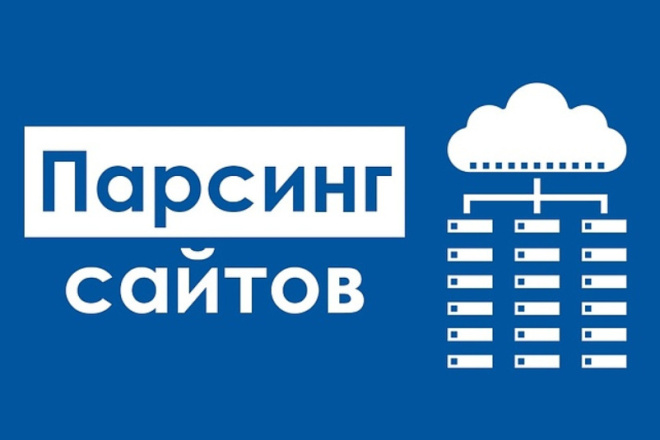

При краже контента
Обращение к копипастеру напрямую
Первым делом свяжитесь с админами площадки и попросите удалить контент. Запугивание судами в рунете воспринимают несерьёзно. Поэтому просто напишите, что у вас есть очевидные доказательства принадлежности текста вам, и когда вы подадите жалобу в DMCA — она будет рассмотрена в вашу пользу. Часто это работает. Но лишь в тех случаях, когда вас обокрал худо-бедно белый или серый сайт. Если вас спарсили дорвеи, порносайты или другие треш-ресурсы из 100% чёрной ниши, надеяться, что отреагируют — не имеет особого смысла.

Уведомление в службу поддержки поисковиков
Второй шаг — написать в саппорт Яндекс.Вебмастера и Google Search Console. Это особенно актуально, если у вас спарсили весь сайт или копипастер обошёл вас в выдаче с вашим же контентом. Сразу скажем, что на быстрый и результативный отклик рассчитывать не приходится. Особенно тяжёлой на подъём является служба поддержки Google. Но связываться с саппортом в таких случаях нужно обязательно.
Жалоба в DMCA
На международном уровне наиболее действенный механизм правовой защиты контента — закон DMCA (Digital Millennium Copyright Act). Он работает в США и распространяется на все американские компании, в том числе поисковики Google, Bing, Ask. По понятным причинам всех в первую очередь интересует Google. Если вы докажете факт нарушения авторских прав, страницы копипастера удалят из выдачи. Подать жалобу на украденный контент могут в том числе нерезиденты США. Как это работает на практике? Владелец сайта подаёт заявку о нарушении авторских прав. В отличие от техподдержки, Google реагирует довольно быстро: присылает ответ и обычно сразу скрывает из выдачи страницы с украденным контентом. Администраторам сайта, на который написана жалоба, высылается соответствующее уведомление. Это идеальный сценарий. Но им обычно всё не заканчивается. За владельцем сайта, которого обвиняют в плагиате, остаётся право подать встречное уведомление. И этой возможностью, как правило, никто не пренебрегает. Тогда доступ к удалённым страницам восстанавливается и начинается долгая волокита. В теории она предполагает судебные тяжбы, но на практике чаще всего заканчивается ничем. Жалоба в DMCA отлично работает, когда ваши материалы спарсили дорвейщики. Такие страницы Google обычно блокирует без колебаний. Больше шансов, если контент украл порносайт, автонаполняемый статейник или другой сомнительный ресурс. В остальных случаях вашу жалобу будут парировать встречным уведомлением, прекрасно понимая, что реальное судебное разбирательство, скорее всего, не грозит.
Жалоба хостерам
Это ещё один весьма действенный способ решить проблему, связанную с кражей данных. Конечно, за спорную статью вряд ли кто-то накажет копипастера, но если речь идёт о систематическом копировании контента, хостер, дорожащий своей репутацией, может забанить такой домен. Другое дело, что большинство откровенно мутных сайтов, типа дорвеев или автонаполняемых PBN-сетей, специально разворачивают на «абузоустойчивых» хостингах. Достучаться с жалобой до провайдера в этом случае — нереально.
Если речь идёт о крупном воровстве данных, можно проявить настойчивость и пойти ещё дальше, написав жалобу в ICANN. Это всемирная корпорация, которая координирует систему присвоения доменных имён. Формально она не управляет содержимым в сети, но через неё можно подать жалобу на домен, если сайт занимается противозаконной деятельностью или злоупотреблениями. Добиться блокировки домена этим способом реально, если вам досаждают откровенно «чёрные» сайты, которые уже многократно приводились в пример. Но и в этом случае подача жалобы предполагает множество нюансов, разобраться с которыми не так-то просто. Как вариант, можно воспользоваться услугами специальных компаний-посредников, специализирующихся на написании жалоб в ICANN.
Тексты не удаляют, а позиции просели
Решение контентных споров может затянуться надолго и с большой долей вероятности закончиться ничем. Это не лучший сценарий для тех, кто из-за копипастеров потерял позиции в выдаче и несёт убытки. В таких случаях куда эффективнее — попробовать вернуть утраченные позиции. Актуализируйте статью: допишите 1–2 тысячи знаков, обновите дату публикации и отправьте документ на переиндексацию. Сделайте посев ссылками в соцсетях и поставьте 1–2 беклинка на сторонних (тематически близких) сайтах. Актуализируя статью, следите за тем, чтобы новый текст не размывал релевантности старой семантики. Это должно дать результат. Особенно хорошо такой финт работает в Google. Некоторые веб-мастеры даже стараются держать под рукой запасной контент, чтобы максимально быстро реагировать на просевшие позиции в подобных ситуациях. Это особенно актуально в конкурентных нишах, где кража контента является очень распространённой практикой. Естественно, всё это предполагает постоянный контроль позиций и автомониторинг страниц сайта на плагиат.